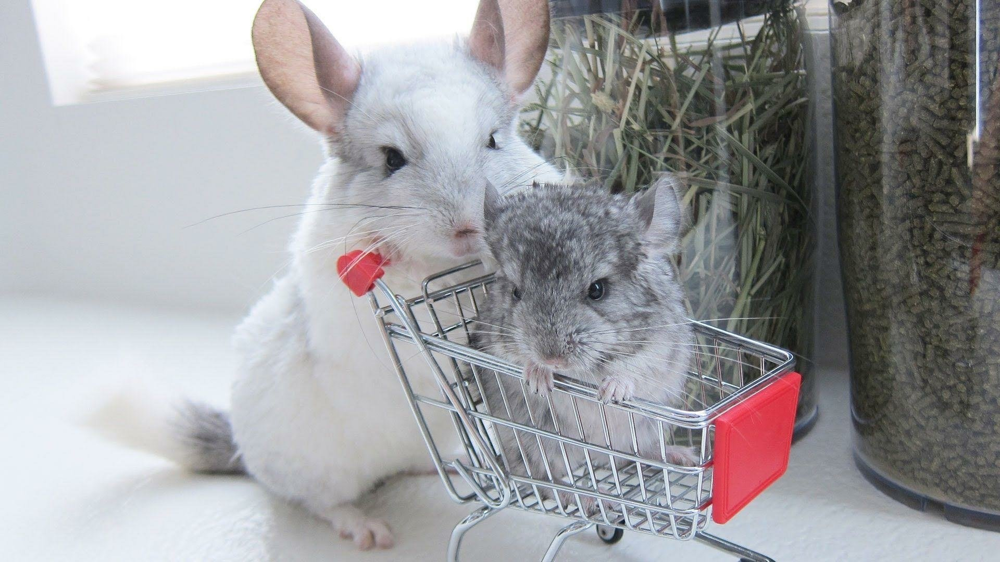

Chinchila é o nome genérico dos mamíferos roedores da família Chinchillidae, nativa dos Andes da América do Sul. Podendo pesar até 1,0 kg. A pelagem da chinchila é cerca de 30 vezes mais suave que o cabelo humano e muito densa, com 20,000 pêlos por centímetro quadrado.
